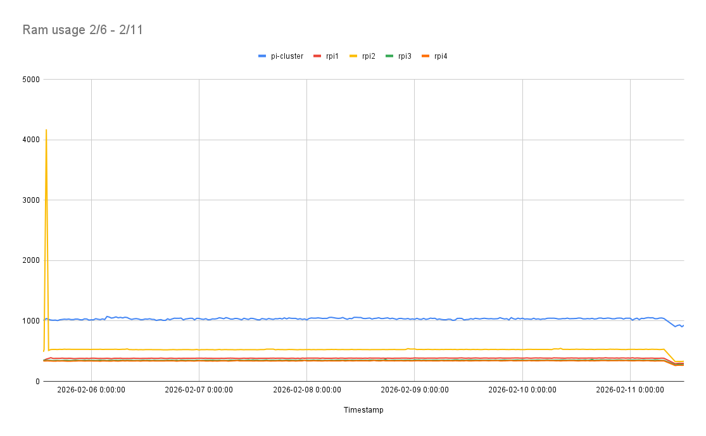
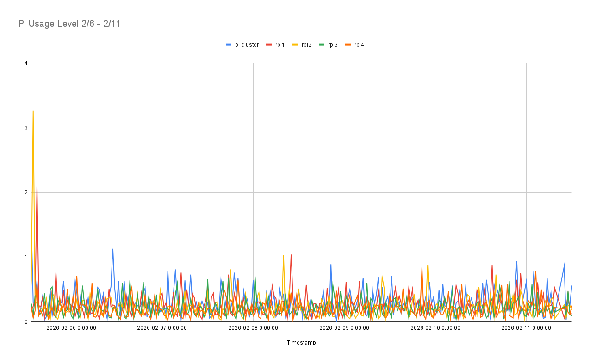
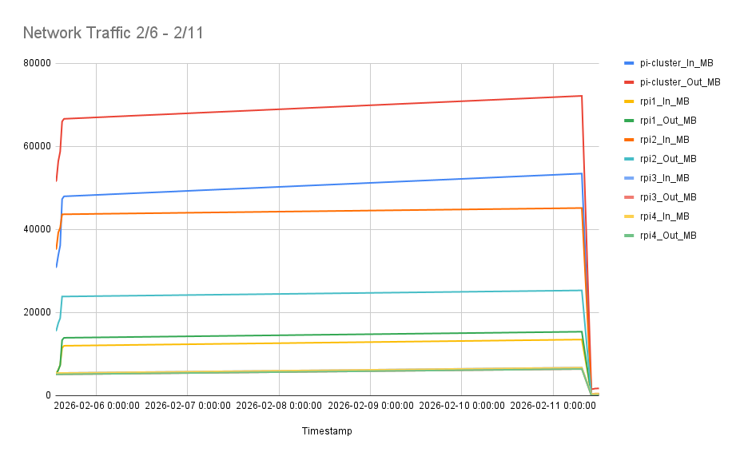
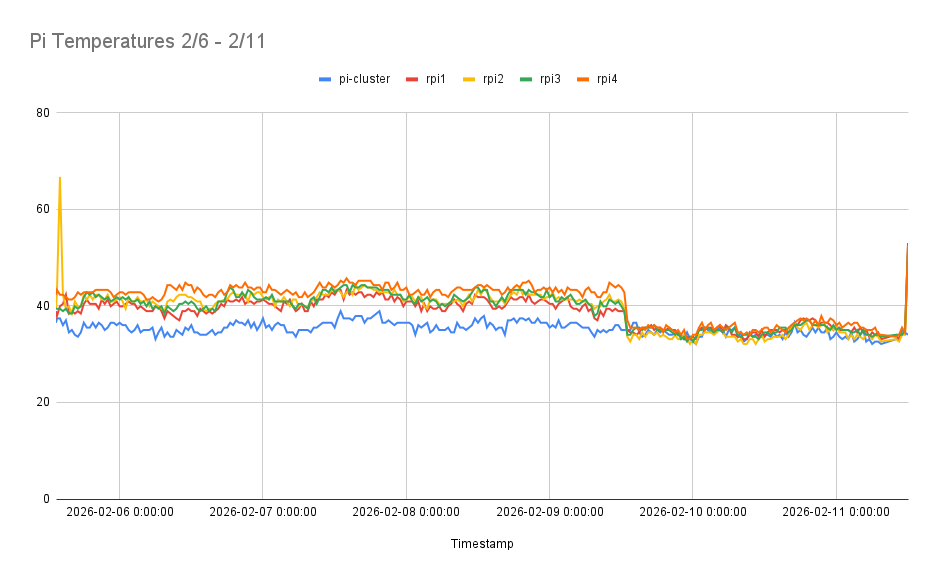

These graphs show system monitoring data collected over a 5-day period, with a new data point recorded every 30 minutes.
The AI processes were running but idle, not under intensive use.

RAM Usage

CPU Core Usage

Network Traffic

Temperature
View / download the CSV files:
RAM Usage
CPU load
Throttling
Temperature
CPU clock frequency
Total ram
Unused ram
Network Traffic